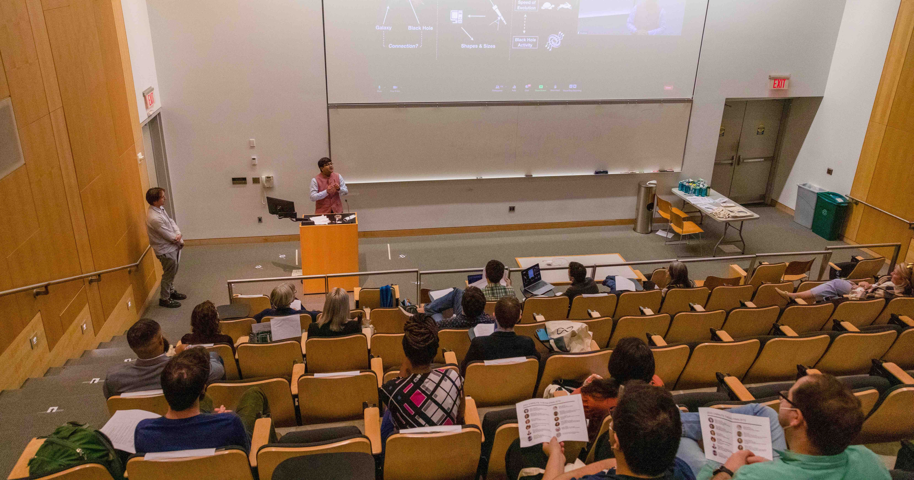

Image Credit: Yale GSAS & Harold Shapiro
During my entire childhood and early adult years spent in India, some of
the most impactful decisions in my life were influenced by excellent teachers
and mentors. My interest in computation techniques & astronomy were
both driven by individuals and teachers, who acted as role-models for me.
Because of this lived experience, I have always believed very strongly
that teachers and mentors can have a tremendous amount of real impact on
the lives of their students. Driven by this firm conviction, I have
passionately pursued every mentoring and teaching opportunity that I have
got. You can use the buttons below to explore some of them!
Research Mentees
During my time at Yale and UW, I have directly supervised and mentored numerous undergraduate and graduate students.
This has typically involved teaching students a wide variety of astronomical / computing /
machine learning concepts, helping them formulate their research projects, and guiding them through the entire
research process. I have co-authored papers with many of them, including several students' first journal articles.
My students have gone on to pursue academic roles in physics/astronomy as well as industrial roles in data-science/tech.
Below is an incomplete list of my current & past mentees:-
- Juneau Chatchadanoraset (Univ. of Washington): Unsupervised Discovery & Representation Learning in Rubin DP1
- Diego Miura (Yale): Unsupervised Discovery & Representation Learning in Illustris TNG mocks of HSC
- Deigo Lockyer (Cal Poly SLO): Training Bayesian ML Frameworks for structural parameter estimation in Rubin DP1
- Milind Sarkar (IISER Mohali): Developing a multi-band structural parameter catalog for 8 million HSC galaxies and performing a quantitative color analysis.
- Caitlin Igel (Univ. of Washington > CU Boulder): Revisiting the morphology-environment correlation from a mulit-scale and quantitative perspective using a sample of 3 million HSC galaxies
- Jeremy Ng (Yale): Working on an unsupervised ML framework to detect mergers and dual AGN
- Isaac Moskowitz (Yale > JHU): Working on an unsupervised ML framework to detect mergers and dual AGN
- Aayush Mishra (IISER Bhopal > TU Dortmund): Worked on applying GaMPEN to JWST CEERS
- Andrew Coli (Yale): Worked on applying GaMPEN to multi-band imaging data
- Amrit Rau (Yale > Coatue Management): Worked on implementing the training framework and STN of GaMPEN
- Ryan Ofman (Yale > DeepMedia AI): Worked on benchmarking GaMPEN against more
traditional light-profile fitting techniques
- Zhengdong Wang ( Yale > Google Deep Mind): Worked on implementing GaMorNet
- Katherine-Ann Carr (UMBC > JHU): Worked on applying different machine learning techniques to galaxy images.
- Nicholas Potteiger (UMBC > Vanderbilt): Worked with GaMorNet and PSFGAN
- Mariam Abalo-Toga (UMBC > SEO): Worked on applying different machine learning techniques to galaxy images.
Yale PHYS 378: Co. Lead Instructor
I completely redesigned and co-taught (as the instructor-of-record) an undergraduate course at the intersection of physics and data science
at Yale titled “Phys 378: Introduction to Scientific Computing & Data Science” with
Prof. Daisuke Nagai. I was selected for this via the competitive Yale Associates in Teaching Program which allows advanced Ph.D. students to expand their range of teaching experiences and responsibilities by
co-designing and co-teaching a course with a Yale faculty member.
The goal of the course was to introduce undergraduates to modern scientific computing methods and I focused the redesign on evidence-based methods
to cultivate practical expertise over passive familiarity. Given how rapidly the scientific computing landscape -- especially machine learning -- changes, traditional
pedagogical materials (e.g., books or written notes) become outdated quickly. To address this, I developed a dynamic format emphasizing real-time skill building and
diverse learning styles.
We ran PHYS378 as a hands-on computing lab course, which met weekly for a typical 3-hour session (with a 15-minute break in the middle). Students
watched two short (10-minute) concept-priming videos before coming to each class to get introduced to relevant mathematical and data-science concepts.
They were quizzed on these videos at the start of each class and this was followed by 40% of planned class-room instruction (slides, chalkboard, think-pair-share activities etc.);
and 60% of live coding in small groups with immediate feedback from instructors and teaching assistants. During these live-coding sessions, students finished
short concept-forming coding tasks based on the day's material and also got started on their coding assignment for the coming week.
We also held a series of capstone seminars led by academic researchers and industry speakers towards the latter half of the course. These were designed to
give the students more examples of real-life applications of what they are learning in class and to also give them some ideas and inspiration for their final projects.
The 34-student class, primarily juniors and seniors, was very well received -- earning evaluations above departmental and divisional averages on every quantitative metric. The course is still taught to this day in this redesigned format.
Teaching Fellowhips & Assistantships
Combining my time at the University of Groningen and Yale, I have instructed
undergraduates in a wide variety of settings and for courses at different
levels for a total of ten semesters. Most of the courses I taught at Yale
involved leading discussion-section and problem solving sessions. I have also
guest-lectured for many courses at Yale and the University of Washington.
For “Advanced Mechanics” at the University of Groningen, I had the role of leading discussion section
and problem solving sessions. For the rest of the courses, I was a lab-instructor in charge
of a specific experiment every year. Under a special arrangement of an expanded appointment,
I also redesigned an old interferometer experiment and designed a new experiment on determining
the decay time of muons.
Yale University
6 semesters as Teaching Fellow
- ASTR 356 01 / ASTR 556 01 / PHYS 356 | Astrostatistics & Data Mining | Spring 2020
- ASTR S135E | Archaeoastronomy | Summer 2019 & Summer 2018
- ASTR 130 | Origins & Search For Life In the Universe | Fall 2017
- ASTR 110 | Planets and Stars | Spring 2018 & Fall 2018
University of Groningen
1 semester as Teaching Fellow | 3 semesters as Lab Instructor
- Waves & Optics | Fall 2015
- Physics Lab 3 | Spring 2016
- Physics Lab 4 | Fall 2016
- Advanced Mechanics | Spring 2017
Meyerhoff & Granville Scholars Programs
During my time at Yale, I was involved in two specific summer research programs, which
aimed at training a more diverse and socially aware next generation of scientists.
Meyerhoff Scholars' Program: I have mentored and supervised three highly talented
undergraduate students from UMBC in the Urry Lab as
part of the Meyerhoff Scholars Program -- a program
focused on supporting students from historically underrepresented groups through intensive mentoring and community building. This
involved not only academic advising but also helping students navigate implicit challenges in academic culture and build confidence as emerging scientists.
Responsibilities included an initial one-week period of teaching followed by twice-a-week personal meetings to support them and oversee their progress.
Two of the students who worked with me ended up pursuing Ph.D. programs in physics/astronomy, while another student went into industry.
Granville Academy: I have taught incoming Yale Astronomy & Astrophysics summer
students as part of the two-week Granville Academy in 2018 and 2019. The program, designed by Prof. Meg Urry and Prof. Louise Edwards,
is named in honor of Evelyn Boyd Granville, who obtained her Ph.D. in mathematics from Yale in 1949 and was the
second African-American woman to receive a Ph.D. in mathematics in the United States. The teaching combined astronomical training
with social activism and discussions on diversity (e.g., Statistics of Under-Representation, Equity in the Classroom, Implicit Bias,
Introduction to Astronomical coding, How to Analyze Data, etc.).
Student Testimonials
I have always heavily used feedback from my students in order to
improve both my style of instruction, and also the content of my
classes/sections.
You will be able to access testimonials from my students by
accessing this Google Doc.